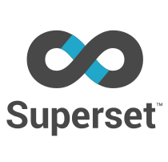

کارهایی که انجام میدهم
مدلسازی و نگهداری داده
تحلیل و بصریسازی

پروژهها
هنوز پروژهای اضافه نشده.
نوشتهها
هنوز نوشتهای اضافه نشده.
کتابخونه
هنوز کتابی اضافه نشده.

هنوز پروژهای اضافه نشده.
هنوز نوشتهای اضافه نشده.
هنوز کتابی اضافه نشده.